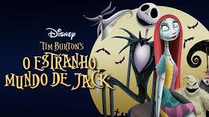

O Estranho Mundo de Jack
Sinopse:
Jack Skellington, o Rei das Abóboras, se cansa de fazer o Dia das Bruxas todos os anos e deixa os limites da cidade. Por acaso, acaba atravessando o portal do Natal, onde vê a alegria do espírito natalino. Ao retornar para a Cidade do Halloween, sem ter compreendido o que viu, ele começa a convencer os cidadãos a sequestrarem o Papai Noel e fazerem seu próprio Natal. Apesar de sua leal namorada Sally ser contra, o Papai Noel é capturado e os fatos mostrarão que Sally estava certa o tempo todo.